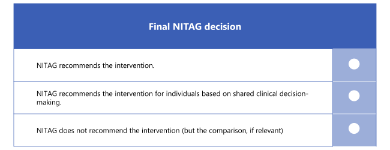

17 EtR Process
This chapter is based on a lecture given by Asst Prof. Kiesha Prem at MIDSEA Summer School 2024, for which I am deeply grateful.
Overview
{kind=link}
Health economics is closely linked to policy. Understanding how policies are made (in a proper way) helps us design studies that can contribute to policy-making. It is also useful to put yourself in the role of policy makers to consider how your research can best benefit the public.
Evidence to Recommendation Process (EtR Process) is a systematic, standardized decision-making process used by national immunization technical advisory groups (NITAGs) for the development of evidence-based recommendations for immunization policy. EtR Process is composed of four steps:
- The policy question
- The elements to consider
- The evidence
- The recommendation
Steps 1, 2 and 3 should be conducted by the NITAG Secretariat or a working group. In step 4, all NITAG members should be involved.
{kind=link}
Prerequisite step
When using the EtR Process for the first time, a prerequisite step should be conducted by the whole NITAG to develop 2 tools:
- Generic criteria tables
- EtR framework
Noted that this step only needs to be conducted once.
Generic criteria tables
Generic criteria tables comprise 7 tables that contain all issues relevant for any immunization policy question, unspecific to any particular disease or vaccine. Each table links a criterion with many factors. Each factor then has many elements, each representing a type of evidence needed for for NITAG consideration.
| Criterion | Factor | Element |
|---|---|---|
| Problem | Burden/epidemiology of disease | Frequency of the disease (incidence, prevalence) Severity of the disease (mortality, morbidity) |
{kind=link}
{kind=link}
EtR framework
EtR framework is a structured document that shows the logical progression from the evidence to the decision. EtR framework has 3 main sections:
- Introduction: presents the policy question.
- Criteria: presents 7 criteria, factors and elements from the generic criteria tables, with evidence and notes.
- Draft NITAG recommendation: presents the draft NITAG decision.
{kind=link}
17.1 The policy question
An initial policy question can be either raised by the Ministry of Health to NITAG, or by NITAG itself. The initial policy question is usually rather broad, for example:
- Should vaccine X be introduced in a routine vaccination programme?
- Should the schedule of vaccine X be reviewed?
This step is to revise the broad question into a structured policy question that detailed enough to guide the collection of evidence. A structured policy question should has:
- Intervention: The vaccine formulation, dosage and schedule.
- Population: The population targeted to receive the vaccine and/or will be affected by it.
- Goal of intervention: The outcome of interest, could be measurable (e.g. reduction of a certain disease) or not.
- Comparison: If compares a new intervention to an existing one.
- Options: If several options are available (e.g. different vaccine formulations, dosages or schedules).
17.2 The elements to consider
This step is to create specific criteria tables from the generic criteria tables. It includes 2 steps:
- Make the elements specific: Specify the disease, intervention and population of interest for all elements in the generic criteria tables.
- Select the factors and specified elements relevant for the policy question: After specifying the elements, pick the relevant factors and specified elements, and place them in the EtR framework.
17.3 The evidence
This step is to collect evidence on the selected factors and specified elements determined in Step 2, rate the evidence quality, and put them in the EtR framework. It is the most labour-intensive part.
Evidence may be obtained from literature (published or unpublished), statistical data, surveillance records, experiences from countries that have already implemented the intervention, documents/publications and/or recommendations from WHO, WHO SAGE, Regional Immunization Technical Advisory Groups such as the European Technical Advisory Group of Experts on Immunization or other NITAGs.
Criterion 2 “Benefits and harms of the intervention” is extremely important, therefore:
- Some NITAGs conduct systematic review, which is very time and resource consuming and should only be done if necessary capacities are available.
- Use GRADE quality assessments to assess the evidence quality, which is the confidence level in how close the reported effects in the evidence are to the true effects.
Lower quality data does not prevent recommendations, but the limitations should be clearly outlined.
17.4 The recommendation
In this step, the Secretariat or working group draft NITAG decision and recommendation, and present to all NITAG members. The whole NITAG should discuss and agree on a final NITAG decision and recommendation.

Excercise
Step 1. The policy question
Should flu vaccine be introduced in a routine vaccination programme?
Make a structured policy question that include:
- Intervention
- Population
- Goal
Intervention: Influenza vaccine VaxiGrip Tetra, single dose of 0.5 mL.
Population:
- In PH (relatively younger population, median = 25 years old)
- People with high contacts with animals
- Vets, slaughterhouse workers, farmers, retailers
- Young (aged 6 months to 4 years)
- Old (aged 55 years old and above)
- Pregnant women
- Immunocompromised
Goal:
- Preventing spillover infections (animals to human with new variants, which may cause pandemic)
- Reducing hospitalization rate and mortality rate
- Preventing infection
- Reduced severe cases needing of hospitalization
- Protecting others
- Maximise vaccine coverage
Step 2. The elements to consider
| Criterion | Factor | How will you collect this evidence? |
|---|---|---|
| Problem | Burden/epidemiology of disease | |
| Benefits and Harms | How substantial are the desired anticipated effects? Do the desirable effect outweigh the undesirable effects? |
|
| Values | Does the target population feel that the desirable effect is large relative to the undesirable effects? | |
| Resource use | Is the intervention a reasonable and efficient use of resources? | |
| Equity | What would be the impact of the intervention on health equity? |
| Criterion | Factor | How will you collect this evidence? |
|---|---|---|
| Problem | Burden/epidemiology of disease | Hospitalization rate Mortality rate |
| Benefits and Harms | How substantial are the desired anticipated effects? Do the desirable effect outweigh the undesirable effects? |
Hospitalisations pre- and post-vaccination Presence of adverse events (AEs) and severe adverse events (SAEs) |
| Values | Does the target population feel that the desirable effect is large relative to the undesirable effects? | Survey the target population Focus group discussions with the target groups Key informant interviews |
| Resource use | Is the intervention a reasonable and efficient use of resources? | Operational research (i.e., resource allocation) Health service modelling Supply and Demand Forecasting |
| Equity | What would be the impact of the intervention on health equity? | Use modelling to evaluate the impact and the cost-effectiveness of the influenza vaccination programmes stratified by the different target groups ECEA or DCEA |